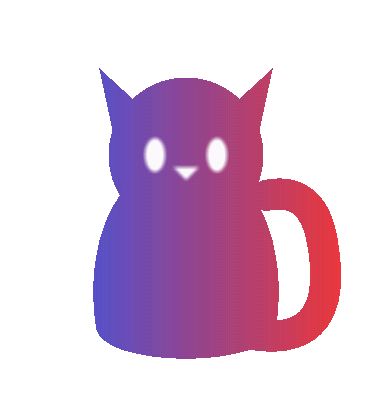
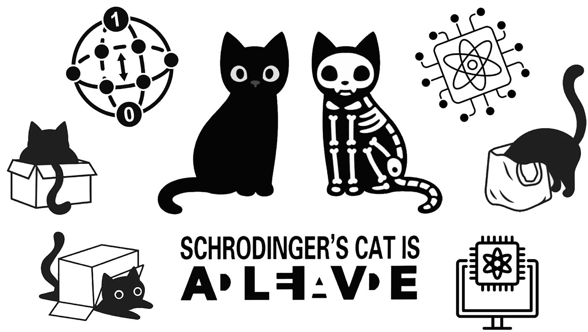
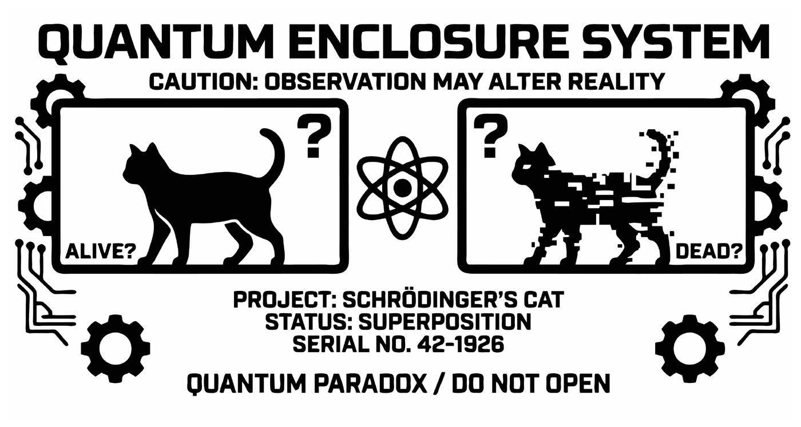

Schrödinger Box
Alive and dead — as long as nobody looks. Here stands the box that made a theoretical cat very famous.

On site
Crack the puzzles that keep Schrödinger's cat locked in, and open the box!


What is superposition?
A classical bit is 0 or 1. A quantum particle can be both at once until someone measures it. That is not a lack of knowledge about a value that was fixed long ago, but a state of its own. And that very state can be used for computing.
Quick questions
Is the cat really dead and alive?
Why does the superposition collapse when you look?
What is it good for?
What's in the boxes?
In front of you are two wooden boxes, each with four combination locks. Whoever solves all the puzzles of a box and manages to open it can look forward to a small surprise.
The two boxes
Each box comes with four puzzles. Each one gives you a four-digit code, and each code opens one of the locks. The order doesn't matter and your progress stays saved on this phone.
🔒Box 1 · easyFour locks · 0/4 solved
The 4 puzzles
Each puzzle gives you a four-digit code. Each code opens one lock.
Good to know
What's in the puzzles
Each of the four puzzles plays through one principle, and each of them is also at work in a real quantum computer.
Puzzle 1 · Superposition
The slider sits between blue and red, and in the middle you can read nothing. Only the two poles can be measured. In a computer this means that a qubit carries both answers at once, and n qubits carry all 2n combinations at once.
Puzzle 2 · Interference
In the maze not every path leads to the goal, because only tiles of alternating colour fit together and the rest is a dead end. A quantum algorithm computes in just this way, by letting the wrong paths cancel each other out and reinforcing the right one. Without this trick, computing everything at once would be worthless, because measuring would only give you chance.
Puzzle 3 · Waves
Three waves are superposed until the target curve is reached, and they only add up with the right phase. It is exactly these phases that the gates in a quantum computer adjust.
Puzzle 4 · Logic
Four labs and four researchers, and the clues narrow it down to one solution. That's not a quantum effect but careful elimination — the thinking that comes before every algorithm.
Stuck?
Spoiler: Show hint 1
Spoiler: Show hint 2
Spoiler: Show hint 3
Spoiler: Show hint 4
🐈⬛Box 2 · hardFour locks · 0/4 solved
The four puzzles
Four puzzles with four questions each. Each one gives you a four-digit code at the end.
Good to know
Read up first
Here you can learn everything you need for the sixteen questions, from the Born rule to the Bell state.